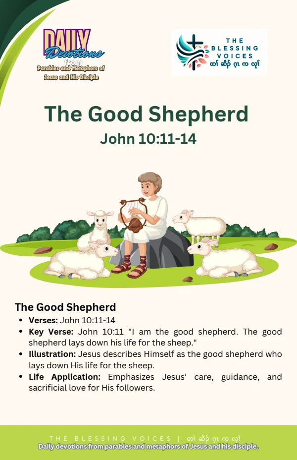

Introduction
Read this English paraphrase of the biblical teaching alongside the original companion booklet. Context notes, devotional applications, reflection questions, and prayer are study aids rather than additional biblical text.
The Bible Story
Jesus described himself as the good shepherd who lays down his life for the sheep. He contrasted this with a hired worker who flees when a wolf comes. He spoke of knowing his sheep and being known by them, of other sheep he must bring, and of one flock with one shepherd. He explained that he lays down his life willingly and has authority to take it up again. This is a paraphrase of John 10:11–18.
Historical and Biblical Context
CONTEXT & DEVOTIONAL INTERPRETATIONThe shepherd language is part of Jesus’ teaching in John 10. It is an extended illustration of his relationship with those who belong to him, not the biography of a named village shepherd.
Spiritual Lessons
CONTEXT & DEVOTIONAL INTERPRETATIONThe passage emphasizes knowing, care, willing self-giving, and the gathering of a flock.
Practical Life Applications
CONTEXT & DEVOTIONAL INTERPRETATIONListen attentively to Jesus’ teaching. Offer dependable care to someone entrusted to you, especially when doing so requires patience or effort.
Reflection Questions
- How does Jesus contrast the shepherd with the hired worker?
- What does he say about laying down his life?
- How can you offer more dependable care to someone?
Closing Prayer
Lord God, help us understand your Word with humility. Teach us to grow in faith, care for one another, and put what we learn into practice. Amen.
Continue your reflection.
Your free companion study booklet.
Download Free Booklet ↓PDF · Free download